1. Chapter 1
1.1. FLO-2D Storm Drain Overview
Initially, the FLO-2D PRO two-dimensional flood routing model was integrated with the Environmental Protection Agency (EPA) Storm Water Management Model (SWMM) Version 5.0.022 (Rossman, 2005; Rossman, Lewis A., 2006; Rossman, Lewis A., 2007) starting in 2013. The FLO-
2D storm drain engine has evolved into a completely new and unique model component. The FLO-2D storm drain engine simulates the exchange of surface water flow with a storm drain system as a flow continuum (one body of water). Over the years, as the storm drain code expanded, the original SWMM source code became obsolete, and the FLO-2D storm drain system represents a significant advancement in storm drain detail, accuracy and speed.
In the coupled model system FLO-2D hosts the closed conduit storm drain system and both models run simultaneously as one engine. FLO-2D calculates all hydrologic and hydraulic flood routing while the closed conduit component computes the pipe hydraulics. The integration process involves allowing both systems to share data on a computational timestep basis controlled by the FLO-2D surface water engine. The storm drain inlet discharge and the potential return flow to the surface is a function of the water surface elevation (WSE) and the storm drain pressure requiring a seamless sharing of data. Both systems must have the same coordinate data base. The FLO-2D model will compute the storm drain inflow discharge based on the predicted grid element headwater depth and inlet geometry type. This inlet-controlled discharge will then be routed as storm drain pipe discharge. The storm drain return flow to the surface water system is exchanged through storm drain inlets/outlets and outfalls. The complete conceptualized flood routing system is shown in Figure 1.
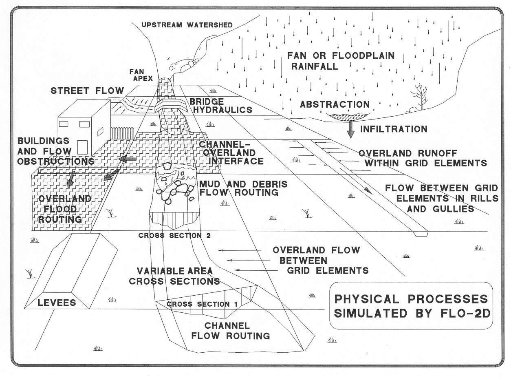Figure 1. Conceptualized FLO-2D Model System with a Storm Drain Component.
The FLO-2D storm drain component can be visualized in layers. The surficial layer represents all the surface water flood movement which is connected to the subsurface pipe layer through the pipe junctions defined as inlets (or outfalls). Figure 2 illustrates the layered system.
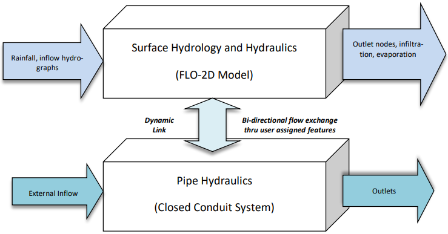Figure 2. Volume Exchange between the Surface Water and Storm Drain System
The FLO-2D storm drain component can be applied to a variety of different storm water projects including:
Assessment of the storm drain capacity;
Existing storm drain system response to floods events;
Design (sizing) of flood control and drainage system features;
Analysis of urban surface features (levees, walls, streets, channels) and their impact on the volumes captured by the piping system;
Design strategies to minimize storm drain overflow.
The FLO-2D storm drain system data base can be developed using the FLO-2D QGIS plug-in tool, the EPA SWMM Graphical User Interface (GUI) or other external SWMM software programs.
The SWMM GUI is installed with the FLO-2D Pro Model installation package. The only requirement is to be able to generate the SWMM.inp Version 5.0 data file. To run the storm drain model, the switch in the FLO-2D model data base must be activated or turned ‘on’ (FLO-2D Control Variables Dialog). This can be accomplished in the FLO-2D model Grid Developer System (GDS) or in the QGIS plug-in. Once the storm drain system is built and the run switch is set, the flow into and through the pipe system is simulated automatically when the FLO-2D model is started. Following a successful simulation of the surface water and storm water integrated model, the storm drain results can be reviewed in either the QGIS, GDS (Figure 3) or in the EPA SWMM GUI. Junctions are shown in green and Inlets are blue.
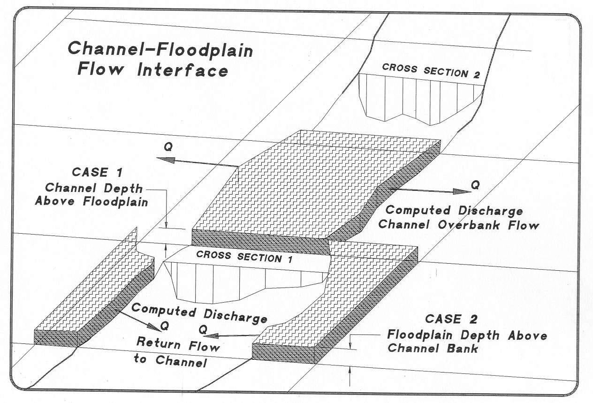Figure 3. A Typical Storm Drain System as Viewed in the GDS
1.2. FLO-2D Storm Drain Model Enhancements
The enhancements to the original SWMM model are extensive. Some of the enhancements are related to the water surface head on the storm drain system. The original SWMM model did not predict or utilize surface water elevation. The FLO-2D model computes the storm drain inlet inflow discharge based on the inlet geometry and the head on the inlet and shares the discharge with the storm drain engine. The inlet and outfall exchange with the surface water including return flow to the storm drain system are based on the comparison between the water surface elevation and the hydraulic head not just the rim elevation. There are a number of enhancements to the outfall functions. Finally, there have been a number of enhancements made to both model codes that include timestep management, inlet geometry, manhole covers, storm drain return flows, reporting output, and feature options.
1.2.1. Computational Timesteps
The storm drain routing timestep in the original SWMM model was based on one of several methods that the user selected. The FLO-2D surface water engine computational timesteps were typically smaller than the storm drain model timestep requiring several successive FLO-2D computational timesteps to be completed to match the simulation time of the storm drain model. During periods of successive FLO-2D timesteps, the volume of water entering the storm drain system from the surface water model was accumulated. Once storm drain simulation time was exceeded, the host FLO-2D model activated the storm drain-surface water interface and the block of surface water was distributed into the storm drain system.
The update interval between the models was essentially the storm drain dry timestep (DRY_STEP) which was hardwired to 60 seconds. The FLO-2D discharge to the storm drain for each computational timestep was accumulated as a volume over the update interval and then was divided by the update interval time to derive a steady discharge exchange from FLO-2D surface water to the storm drain. The flow between the models could only be in one direction, either inflow to the storm drain system or return flow to the surface water. Oscillations occurred when the surface water and storm drain conditions force the inflow and return flow to alternate with large blocks of water. In addition, a storm drain feature may fill and drain repeatedly even though there may be only inflow to the storm drain system and or only return flow to the surface water.
A new timestep synchronization method was implemented, and the surface water and the storm drain systems now communicate at each FLO-2D computational timestep. The storm drain system uses the FLO-2D computational timestep for the water volume exchange as well as for the flow routing through the pipe system. With the more frequent water volume exchange at each FLO-2D computational timestep, the inconsistencies between the volumes leaving the surface water and entering the storm drain system were eliminated. The storm drain routing timestep is set up as the FLO-2D timestep for the dynamic wave solution throughout the simulation for all conditions, if the user sets up a fixed timestep or if the user assigns a variable timestep.
In most of the simulations, the FLO-2D timesteps are small enough for the storm drain solution to converge. For all conditions, the computed variable timestep is equal to the FLO-2D computational timestep.
1.2.2. Inlet Geometry
In the original SWMM model, pipe discharge was based on the system conveyance capacity, ignoring the inlets discharge capacity (control). The FLO-2D storm drain model computes the storm drain inlet discharge based on the storm drain inlet geometry and the predicted water surface elevations. An inlet can be assigned to a floodplain, channel or street element. Three inlet options represent typical storm drain inlet designs. A fourth option enables a stage-discharge rating table for a unique inlet conditions (INTYPE= 4) and a fifth option will simulate a manhole (INTYPE=5).
The EPA SWMM5 model introduced a ponding feature to enhance the flooding approach used by the EPA SWMM 4 model. The purpose of this feature was to emulate surface water that would both keep the excess storm drain water under pressure and return flow to the system when storage capacity became available. The ponding feature is activated when the inlet storm drain pressure head exceeds rim elevation. Two overflow conditions were evaluated by the SWMM model when the pressure head exceeds the rim elevation:
Flooding: Originally developed in EPA SWMM Version 4, excess volume in the storm drain overflows and is lost because there is no inlet temporary storage. Hydraulic head at the node will not rise above the inlet rim + surcharge depth. This approach is a simplification that ignores the additional surface water head that may force more water to move through the pipe system.
Ponding: This routine was created to represent a surface water layer in the EPA SWMM 5 model. Inlet overflow is stored at the node until such time when the pressure head is reduced below the rim elevation and the stored volume is released back to the storm drain system. In this case, the overflow volume is never lost from the storm drain system. Ponded nodes do not contribute any volume to the surface water and in the flow routing continuity report any remaining ponded volume at the end of the simulation is reported as Final Stored Volume. The ponded volume continues to increase with more inlet overflow (return flow). To enable return flow, the catch basin pressure head must exceed the rim elevation plus surcharge depth (manhole cover). The rate of the rise in the pressure head depends on multiple factors including the available ponded area. There is no maximum ponded volume.
The global ponding options was off and none of the nodes could store volume. The flooding option was applied for this case.
The Allow Ponding option was selected, and those nonzero ponded area nodes would receive ponded water. Nodes with a zero-ponded area would receive flooding water.
When an inlet is flooded, the computed depth will decrease to the rim elevation and the overflow lost from the system is considered excess inflow into the node. For a ponded node, the depth is based on volume divided by the ponded area. The smaller the assigned ponded area, the higher the water rises and drains. The ponded area affects how quickly ponded water reenters the storm drain system because it defines the pressure head at node. The program accounts for the ponded volume so the pressure head can be computed for the next time step.
EPA SWMM5 ponded routine represents an unrealistic condition where the storm drain water under pressure exceeding the rim elevation is accumulated at an inlet but does not return to the surface water to flow away from the inlet. This is because the SWMM model cannot route surface water. Since the FLO-2D model routes the surface water and predicts flood hydraulics, the SWMM ponding feature was modified. Consideration was given to the fact that no inflow should occur during flooding conditions in the storm drain. If the inflow to inlet is ceased at the moment there is no storm drain capacity, discharge oscillations can physically occur. This is an actual response of the storm drain system to the surface water.
There are two pressure conditions that had to be assessed in the revised ponding feature:
FLO-2D WSE > storm drain pressure head > rim elevation:
The conduit water volume under pressure stays in the pipe and the return volume is assigned to the drop basin pipe based on its flow area. No volume is lost from the storm drain system to the surface water and the volume stays in the pipe. The pressure head in the storm drain is correctly represented for this condition. For the second condition:
FLO-2D WSE < storm drain pressure head > rim elevation
When the storm drain pressure exceeds the surface water elevation, the water should overflow the inlet and join the surface water to be routed away from the inlet and there is no storage volume in the pipe system.
Surface Water – Storm Drain Exchange Conditions:
When the storm drain capacity is exceeded and is under pressure, the return flooding volume becomes part of the surface water in the FLO-2D model if the pressure head exceeds the FLO2D water surface elevation. When an inlet has orifice flow and the flow depth is higher than the curb height, water is pouring into the storm drain pipe. As the storm drain fills and the pipe water surface approaches the inlet rim elevation and there is a rapid increase in pressure head in the catch basin. When this occurs, oscillations may be noted in the storm drain pressure and discharge plots. With this modification to the storm drain code, the conditions that control the inlet flow direction described below and shown in Figure 4 through Figure 11:
Storm drain pressure head < rim elevation:
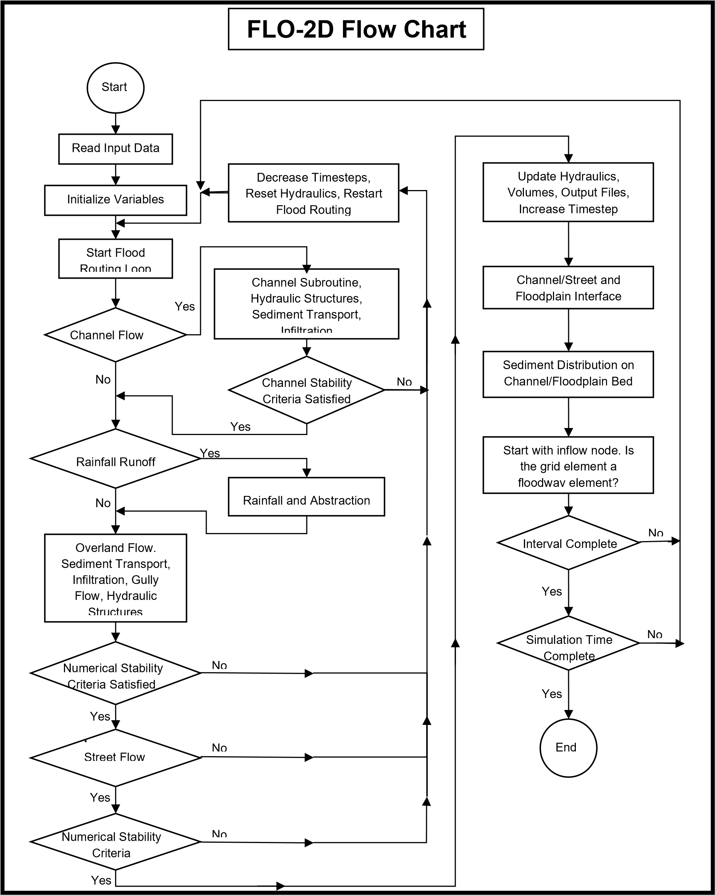
Inflow discharge is passed from FLO-2D to the storm drain;
Pipe is not full;
No return flow.
Figure 4. Inlet No Return Flow.
Storm drain pressure head > FLO-2D WSE > rim elevation:
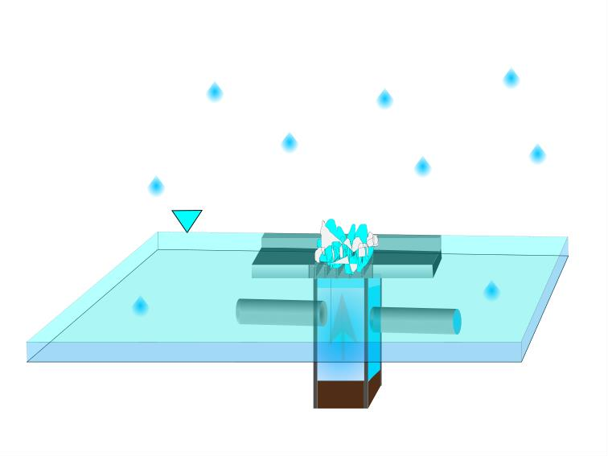
No inflow discharge is passed from FLO-2D surface to stormdrain;
Pipe capacity is full;
Return flow is exchanged to the surface;
Water leaves the storm drain system.
Figure 5. Inlet with Return Flow
FLO-2D WSE > Storm drain pressure head> rim elevation:
No inflow discharge is passed from FLO-2D;
Pipe capacity is full;
No return flow.

Figure 6. No Return Flow No Inlet Flow
1.2.2.1. Inlet pressure head and the FLO-2D WSE
The inlet pressure head increases but is less than the FLO-2D WSE;
The head exceeds the rim elevation;
No return flow;
The volume of water column above the rim will not return to surface until it exceeds the WSE.

Figure 7. WSE Greater than Inlet Pressure Head.
1.2.2.2. Inlet pressure head and the pipe flow
Higher head from surface water at the inlet;
Surface water head forces more water through the downstream conduits at higher velocities;
Reduced or no return flow to the surface;
Higher head due to high water surface elevations may force the flow to the outfalls instead of overflowing the inlets and manholes.

Figure 8. High Pressure Head at an Inlet.
1.2.2.3. Return flow to the surface
The return flow to the surface water is equal to the flow volume above the RIM at each timestep;
The volume fills the vertical pipe to the rim elevation;
All available return volume is exchanged to the surface water.

Figure 9. Return Flow.
1.3. Surface water and the pipe capacity
When an inlet is connected to a downstream pipe that is at full capacity with zero or negative pipe velocity (backwater effect), the inflow from the surface water is zero, the inlet pressure head will exceed the crown elevation of the horizontal pipe and the FLO-2D surface water elevation may be greater than zero (see Figure 10).
Pipe capacity full;
Pipe velocity zero or negative;
Inlet flow zero;
Return flow.

Figure 10. Surface Water and Pipe Capacity.
1.4. Pressure head and manholes
Flooding will occur at manholes when the pressure head exceeds manhole rim elevation plus surcharge depth plus FLO-2D water depth (see Figure 11).
Pipe capacity full;
Pressure head greater than water surface elevation;
Return flow to system.

Figure 11. Manhole under Pressure with Return Flow.
1.5. Pressure head variability
This approach for the water exchange between the surface and the storm drain may result in pressure head variability, conduit velocity fluctuations and different return flow results for inlets and manholes under pressure when compared with SWMM models or early FLO-2D storm drain models. The following response can be observed in the FLO-2D storm drain results:
The head on the inlet continuously increases when the PH is less than the FLO-2D WSE even though the head exceeds the rim elevation. Since the inlets are flooded, this results in higher storm drain pressure. The volume above the rim is not released to the surface until the PH exceeds the FLO-2D WSE.
For underwater inlets, the higher-pressure head pushes more water through the downstream conduits at higher velocity.
Higher velocities in downstream conduits may result in higher discharges in various locations in the storm drain with a possible corresponding reduction in the return flow to the surface water for some inlets and manholes. Maintaining continuity in the storm drain system, there may be sufficient head to force the flow to the outfalls instead of overflowing the inlets and manholes.
Summarizing, higher upstream pressure head on inlets (higher FLO-2D WSE) may result in a change in the distribution between the return flow from a popped manhole or inlet compared the downstream conduit flow through the outfall nodes. This is a physical process that was not simulated in the original SWMM storm drain engine.
1.6. Outfall Discharge
The FLO-2D preprocessor tool (QGIS or GDS) will create the SWMMOUTF.DAT containing the outfall nodes that are defined in the SWMM.inp file. The outfall discharge to the surface water can be turned ‘on’ = 1 or ‘off’ = 0 in the QGIS Storm Drain Editor dialog window (Components | Outfalls) or in the GDS dialog window (Tools | Storm Drain | View Outfall Nodes Dialog). Setting the outfall switch to ‘off” will force the outfall discharge out of the model system. The outfall nodes listed in the SWMMOUTF.DAT file should be in the same order as they appear in the SWMM.inp file, if any of the features for the storm drain system is changed, data files need to be recreated to maintain consistency. When the outfall order is modified in the SWMM.inp, because either a new outfall node was created or deleted from the pipeline system, the SWMMOUTF.DAT should be regenerated with the GDS. If the outfall switch is ‘on’, the FLO-2D water surface elevation and storm drain pressure head are compared, and the outfall will discharge to the surface water until the FLO-2D water surface elevation is equal to or greater than the pressure head. Potential backflow into the outfall pipe depends on the comparison of the water surface elevation and the outfall pressure head, and on the assignment of a Tide Gate structure in the SWMM.inp file. Outfall discharge from storm drain to the FLO-2D surface water is reported to the SWMMOUTFIN.OUT file. This file lists the grid element (or channel element if applicable) in the first line followed by the hydrograph with time and discharge pairs.
The invert elevation of outfalls can be less than the floodplain, channel or street elevations. This may occur for a ponded surface water condition that is assigned as a ground elevation because it would not contribute to downstream flooding. An outfall invert underground (or underwater) is imposed for this condition (Figure 12). An artificial head equal to the ground elevation is assigned to the outfall node (for the entire simulation). This artificial head causes the pipe to fill, and the artificial volume is accounted for in the storm drain model. When the model runs, the inflow may be added to either the outfall grid element or the upstream storm drain pipe network and the flow can go either in or out of the outfall pipe based on the pressure head.
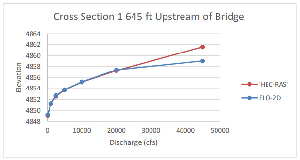Figure 12. Initial Condition for an Underground (Underwater) Storm Drain Outfall
Typically, an outfall has an invert elevation equal to or greater than the floodplain, channel or street elevations. To account for volume conservation, the storm drain outflow that represents inflow volume to a FLO-2D channel is reported in the CHVOLUME.OUT file. Water will flow in or out of the outfall pipe based on the head comparison. Water can enter the storm drain when the water surface elevation is greater than the invert, but it can also be evacuated from the storm drain if the pressure head is above the water surface elevation.
1.7. Flapgate Option
A storm drain inlet can be simulated as an outlet with a flapgate to stop the surface water from entering the storm drain system (Type 4 inlet). The flapgate switch in SWMMFLO.DAT has the following settings:
Feature = 0, No flapgate – horizontal inlet opening Feature = 1, No flapgate – vertical inlet opening Feature = 2, Flapgate ‘on’ for fake outfalls
A “fake outfall” can be set up as an inlet that will discharge flow from the storm drain to the surface water. Feature equal to 2 set up a flap gate for a fake outfall.
1.8. Manhole Covers
The manhole cover lift-off (popping) is simulated by assigning the surcharge depth in the SWMMFLO.DAT file (Type 5 inlet). When the cover is in place there is no flow exchange. Discharge exchange between FLO-2D and the manhole cover junction box is calculated only after the manhole cover has been popped. To pop the cover, the storm drain pressure plus surcharge depth is compared to the surface water. Once the cover is off, the surcharge depth is set to 0, the cover stays off and inlet discharge or return flow can be calculated. Flooding occurs at manholes when the pressure head at node is above manhole invert + maximum surface depth + surcharge depth.
SDManholePopUp.OUT and ManholePop.OUT are created when at least one manhole pops in the storm drain system. These files contain the following information:
Manhole ID.
Time of occurrence
Pressure head
Rim elevation + Surcharge Elevation
FLO-2D WSE.
The following is an example of the information that is reported to the SDManholePopUp.OUT output file:
MANHOLE: I5-37-27-28 POPPED AT TIME (hrs): 3.93 PRESSURE HEAD: 1374.07 > RIM + SURCH: 1371.44 > FLO-2D WSE: 1370.95
Table 1 is an example of the information that is reported to the ManholePop.OUT output file.
| X Coord | Y Coord | Grid | Manhole ID | Popped at time (hrs) | Pressure Head | PH RIM + SURCH | FLO-2D WSE |
|---|---|---|---|---|---|---|---|
| 705202.50 | 954517.50 | 439087 | IM5-349 | 0.00 | 1482.03 | 1480.12 | 1479.44 |
1.9. Curb Inlet Flow Adjustment
For each timestep, the FLO-2D grid element water surface elevation (flow depth) is used to calculate the discharge that passes through the inlets using the weir and orifice equations as well as the geometry of the inlets defined by the user in the SWMMFLO.DAT file. This uniform water surface elevation over the grid element does not take into consideration a street cross slope and thus will under predict the flow into the drain. Using an assumed 2% street cross slope results in a higher depth (more head) on the storm drain inlet (see Figure 13 and Figure 14). The curb height can be entered in the SWMMFLO.DAT file to make this adjustment automatically for each inlet. The curb inlet flow assignment is the same concept as the Street Gutter Flow feature (requires GUTTER.DAT file) that can be applied to gutters in streets without storm drain inlets.

Figure 13. Curb Inlet Water Depth Profile Adjustment
Definitions:
Grid depth = flow depth on conventional grid element
Curb depth = depth on the storm drain
Flow depth = flow depth above the curb height
Lc = length of street away from curb that is inundated by the curb depth
Volume = total water volume on a grid element = side L x side L x Grid Depth
VOLCurb = volume equal to the curb height =
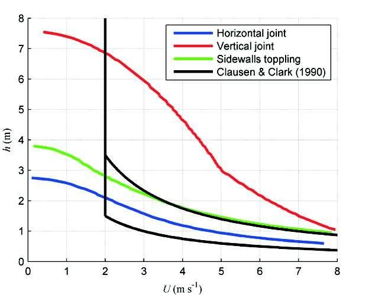1/2 base (L) x height (0.02 x L) x side L = 0.5 x 0.02 x L3 = 0.01 L3
Figure 14. Volume Conversion - Square Floodplain Grid Element to Right Triangle at 2% Slope
To calculate flow depth on the storm drain inlet:
IF Volume < VOLCurb:
Volume = 0.5 x Curb depth x Lc x L = 0.5 x Curb depth x Curb depth/0.02 x L
Curb depth = (Volume/(25.x L))0.5 Flow depth = 0.
If VOLCurb ≤ Volume:
Volume - VOLCurb = L x L x Flow depth
Flow depth = (Volume - 0.01 L3)/ L2
Curb depth = Curb height + Flow depth
The curb depth is used to compute the discharge into the storm drain. This inlet discharge volume is removed from the grid element and the model continues to route the remaining volume down the street.
1.10. Storm Drain Pressure Head Variation Dampening
In the original SWMM model, to avoid rapid pressure fluctuation that induces discharge oscillations in the drop boxes, the storm drain engine had a pressure dampening algorithm. This algorithm used the surface area of the lateral conduit connected to the drop box. As the conduit water surface elevation approached the soffit, the algorithm applied a decreasing water surface area. Once the flow reached the soffit, the pressure head dampening method is applied for a distance above the invert of 1.25 times the conduit pipe diameter. The surface area was then exponentially reduced to the drop box diameter as the flow filled the catch basin over the prescribed distance. The justification for this dampening routine is that the pressure head change in one computational timestep may be sufficient to fill a four-foot drop box causing both oscillation and volume conservation error. In reality, during a storm this may occur as evidenced by manhole popping or spraying of water from inlets.
To more effectively represent the physical system, the pressure head dampening routine was reviewed and several options to revise the dampening algorithm were evaluated including allowing the pressure head variation up to be exponentially reduced over to entire drop box to the rim elevation. The Figure 17 through Figure 20 display water profiles and the pressure head versus time for an upstream inlet that has an inflow condition that fills the vertical pipe above the rim elevation. This example shows how the pressure head calculation is affected for three different dampening methods when the pressure head exceeds the soffit elevation. The selected method allows the pressure head to be exponentially reduced over to entire drop box to the RIM elevation.
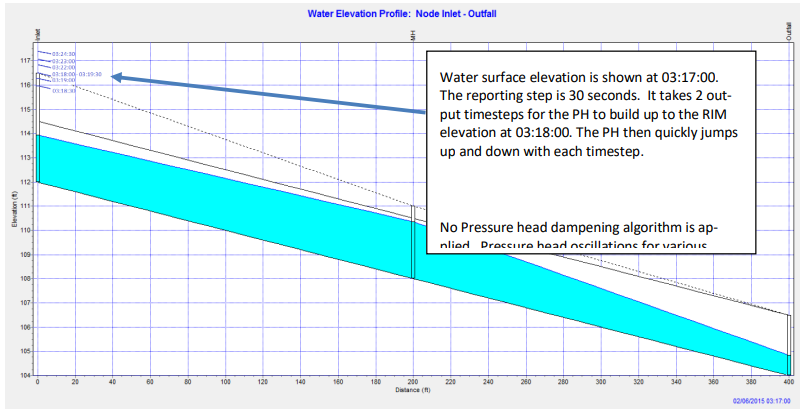Figure 15. Water Elevation Profile at 03:17:00.

Figure 16. Inlet Pressure Head - No Pressure Head Dampening is Applied

Figure 17. Water Elevation Profile at 03:18:00.
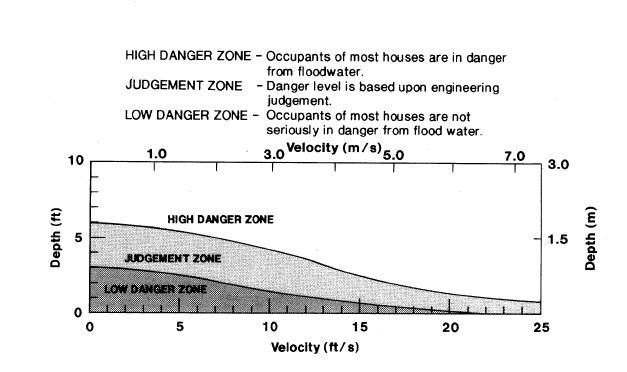Figure 18. Inlet Pressure Head with Dampening up to 1.25 Times the Lateral Pipe Diameter.

Figure 19. Water Elevation Profile at 03:18:00.
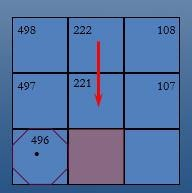Figure 20. Inlet Pressure Head with Dampening up to RIM Elevation
1.11. Storm Drain Blockage Method
A clogging factor was created to simulate a reduction in inlet capacity. The SDCLOGGING.DAT file has the following format:
ID Grid Cell Inlet ID Clogging Factor - Cf(%) Time for clogging -Tc(hr) D 2694 I1 25 0.50 D 2409 I2 50 3.25
The inlet discharge calculated using either the orifice or weir equations is subject to a blockage reduction that is specified by the user. The inlet discharge is calculated and then reduced using the clogging factor in the following equation:
where:
QR = reduced inflow discharge
Cf = clogging factor
Qc= calculated discharge using the orifice/weir equations.
This methodology is recommended for single inlets by entities such as the Colorado Department of Transportation and the cities of Denver and Las Vegas. Figure 21 and Figure 22 show the reduced discharge for a Type 2 inlet using a clogging factor of 50% at time 0.5 hrs.

Figure 21. Type 2 Inlet Discharge versus Time

Figure 22. Type 2 Inlet Discharge versus Time Using a Clogging Factor of 50% at Time 0.5 hrs
It is noted that the Flood Control District of Maricopa County (FCDMC) in Phoenix, Arizona recommends this approach for flooding and drainage studies, but it should not be applied for storm drain design. In a design project the storm drain features are oversized to provide enough capacity for clogging. Table 2 shows the FCDMC catch basin clogging factors for predicting inlet discharge (FCDMC, 2018). The clogging factor data file can be created in the SWMMFLO.DAT data dialog for all types of inlets.
Table 2. FCDMC Catch Basin Clogging Factors (FCDMC, 2018)
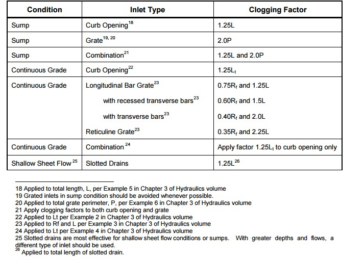1.12. Reduction of Return Flow to Surface
Flow energy losses are experienced when a conduit or conveyance facility has change in size or geometry. There is contraction in the flow area between the catch basin of an inlet (vertical pipe) and the inlet. The sudden contraction at the inlet from the drop box pipe diameter results in an energy loss in the return flow from the storm drain to the surface water. The energy loss for a contraction in pressure flow can be calculated from the following equation (DOT Urban Drainage Design Manual):
where:
Kc = contraction coefficient (seeTable 3)
V = velocity downstream of transition
G = acceleration due to gravity 9.81 m/s2 (32.2 ft/s2)
Table 3. Values of K for Contraction. (Dept. of Transportation, 2013)
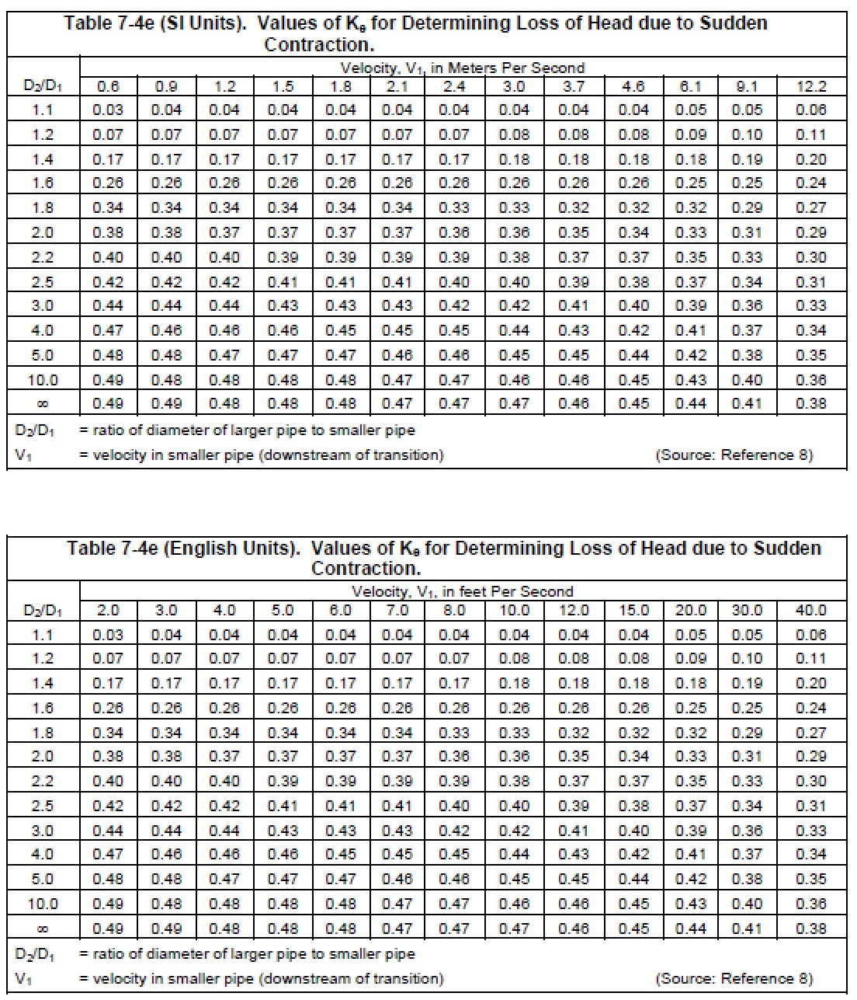1.13. Storm Drain Model Governing Equations
1.13.1. Unsteady Flow in a Pipe Network
The storm drain engine solves the 1-D Saint Venant equations for the conservation of mass and momentum that governs the unsteady flow of water through a network of pipes (Rossman, 2006).
Continuity Equation:
Momentum equation for x-direction:
where:
x = distance along the conduit
t = computational timestep
A = cross sectional area of the pipe
Q = pipe discharge
H = hydraulic head of water in the conduit (sum of WSE plus pressure head)
Sf = friction slope or head loss per unit length of pipe
hL = local energy loss per unit length of pipe
g = gravitational acceleration
These equations are solved for the discharge Q and head H in each pipe by setting the initial conditions for H and Q at the beginning of the simulation as well as setting the boundary conditions at the beginning and end of each conduit for all timesteps. For each pipe, the geometry (flow area A) is known as a function of the flow depth y and head H. Unsteady flows are routed through a network of closed conduits. Unsteady flow with backwater effects, flow reversals, pressurized flow with entrance/exit energy losses and other conditions can be simulated (Rossman, 2005). The momentum equation inertial terms are reduced as flow comes closer to being critical and are ignored when the flow is supercritical based on the following options:
Damping option (KEEP) - inertial terms of the St. Venant equation solution are included.
Ignore option (IGNORE) - inertial terms are ignored.
Dampen option (DAMPEN) - implements Local Partial Inertial modification (LPI).
For the FLO-2D model the LPI damping option is always applied. The simulation of unsteady flows with subcritical/supercritical mixed flow regimes is accomplished by neglecting varying portions of the inertial terms in the unsteady momentum equations according to the local Froude number. A weighting factor σ which ranges between 0 and 1 is utilized. This parameter damps out the contribution of the inertial terms as the Froude number Fr increases and approaches 1.0 and ignores them completely when the Froude number is greater than 1 (supercritical flow). The weighting factor 𝜎 varies as:
σ = 1.0 𝑓𝑜𝑟 𝐹𝑟 < 0.5
𝜎 = 2.∗ (1.−𝐹𝑟) 𝑓𝑜𝑟 0.5 ≤ 𝐹𝑟 ≤ 1.0
𝜎 = 0. 𝑓𝑜𝑟 𝐹𝑟 > 1.0
The inertial terms are multiplied by σ when they are added into the solution of the momentum equation for each timestep and conduit. The Froude number is calculated at the midpoint depth in the conduit. This solution (DAMPEN) produces more stable results around the critical stage of the flow, but retains the essential accuracy of the fully dynamic solution at sub-critical flow conditions.
The friction slope component Sf is based on Manning’s equation:
where:
n = Manning roughness coefficient
V = average flow velocity (Q⁄A)
R = hydraulic radius
k = 1.486 for English units or 1.0 for metric units
The local head loss term hL is caused by an energy loss that is proportional to the velocity head and it can be expressed as:
where:
K = loss coefficient for each pipe
V = velocity
L = conduit length
g = gravitational acceleration
To calculate the change in pressure head at each node that connects two or more conduits an additional equation is necessary (Figure 23):
where:
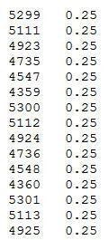H = flow depth (difference between the node head and the pipe invert elevation)
Astore = node surface area
∑As = surface area contributed by the conduits connected to the node.
∑Q = net flow at Node J contributed by all connected conduits plus external inflows
Figure 23. Node-Link Representation of a Drainage System (Roesner et al, 1992)
1.14. Solution Algorithm – How the Model Works
The differential form of the continuity and momentum equations for the storm drain component are solved by converting them into an explicit set of finite difference formulas that compute the flow Q in each conduit and head at each node for time T + t. Explicit schemes for these types of solutions are limited to minor steps by strict numerical stability criteria. The following discussion has been extracted from the SWMM documentation (Rossman et al, 2005).
The flow equation solved for each conduit is given by:
The \(\mathrm{\Delta}Q\) in each conduit corresponds to the different force terms expressed as:
where:
\(\overline{A}\) = conduit average cross-sectional flow area
\(\overline{R}\) = average conduit hydraulic radius
\(\overline{V}\) = conduit average flow velocity
\(V_{i}\) = local flow velocity at location i along the conduit
\(K_{i}\) = local loss coefficient at location i along the conduit
\(H_{1}\) = head at upstream node of conduit
\(H_{2}\) = head at downstream node of conduit
\(A_{1}\) = cross-sectional area at the upstream end of the conduit
\(A_{2}\) = cross-sectional area at the downstream end of the conduit
n = Manning roughness coefficient
L = conduit length
g = gravitational acceleration
t = time
∆T = timestep
The average area 𝐴̅, hydraulic radius 𝑅̅, and velocity 𝑉̅ are computed using the heads H1 and H2 at either end of the conduit from which corresponding flow depth values y1 and y2 can be derived. An average depth y is then computed by averaging these values and is used with the cross-section geometry of the conduit to compute 𝐴̅ and 𝑅̅. The average velocity 𝑉̅ is determined by dividing the most current discharge by the average flow area. A limitation on this velocity is coded to prevent unbounded frictional flow adjustments. As a consequence, the velocity cannot be higher than 50 ft/sec.
For a conduit with free fall discharge into either of its end nodes, the depth at the end of the conduit for the node below the invert elevation of the conduit is set equal to the smaller of the critical depth and the normal flow depth for the conduit flow. The equation to calculate the head adjustment term for each timestep at each node is:
where ∆Vol is the net volume flowing through the node over the timestep. The net volume is computed as:
The conduit surface area (Astore) depends on the flow condition within the conduit as follows:
Under normal conditions the pipe surface area equals half of the conduit length times the average of the top width at the end and mid points of the conduit. These widths are evaluated before the next updated timestep using the flow depths y1, y2, and y.
If the inflow of the conduit to a node is in free-fall (conduit invert elevation is above the water surface of the node), then the conduit does not contribute to the node surface area.
For conduits with closed shapes such as circular pipes that are greater than 96 percent full, a constant top width equal to the width when 96 percent full is used. This prevents the head adjustment term Ht from creating numerical instability as the top width and corresponding surface area approach zero when the conduit reaches a full condition. A minimum surface area for Astore is assigned to all nodes, including junctions that normally have no storage volume, preventing Ht from becoming unbounded. Under normal conditions Astore equals half the conduit’s length times the average of the top width at the end- and mid-points of the conduit.
These widths are evaluated before the next updated flow solution is found, using the flow depths y1, y2, and y discussed previously. The default value for this minimum area is 12.57 ft2 which corresponds to the area of a 4-foot diameter manhole.
To calculate the discharge Q and the head H, the equations are solved for each timestep using a method of successive approximations with under- relaxation (Rossman, 2005). The solution algorithm involves the following steps:
A first estimate of discharge Q in each conduit at time t+Δt is calculated by solving for Qt+∆t using the heads, areas, and velocities determined at the current time t.
A first estimate of the head (H) in each conduit at time t + Δt is calculated by evaluating Ht+∆t using the discharge Q just computed. The results are denoted as:
Qlast and Hlast
The equation Qt+∆t is solved once again, using the head, area, and velocity based on the Qlast and Hlast values just computed. A relaxation factor Ω is used to combine the new flow estimate Qnew with the previous estimate Qlast to generate a new Qnew according to the equation:
(1.15)\[Q_{new} = (1−Ω) Q_{last} +Ω Q_{new}\]The equation for Ht+∆tis solved again for heads using Qnew. As with discharge, this new solution for head, Hnew is weighted with Hlast to produce an updated estimate for heads:
(1.16)\[H_{new} = (1−Ω) H_{last} +Ω H_{new}\]If Hnew is close enough to Hlast then the process stops with Qnew and Hnew as the solution for time t + Δt. Otherwise Hlast and Qlast are replaced with Hnew and Qnew, respectively and the process returns to step 2.
The procedure uses the following parameters and conditions for this iterative procedure:
A constant relaxation factor Ω equal to 0.5.
A convergence tolerance of 0.005 feet on nodal heads.
Number of trials is limited to four.
The flow depth in conduits that are not surcharged is limited not to exceed the normal flow depth for the discharge at the upstream end of the conduit whenever the flow regime is supercritical. FLO-2D storm drain model uses the water surface slope and Froude number to determine when supercritical flow occurs in a conduit.
1.14.1. Surcharge conditions
A node is defined to be in a surcharged condition when its water level exceeds the crown of the highest conduit connected to it. Under this condition the surface area of any closed conduits would be zero and equation for the change in the pressure head would no longer be applicable. Additional criteria include:
An alternative nodal continuity condition is used where the total rate of outflow from a surcharged node must equal the total rate of inflow Σ𝑄 = 0. This equation only contains flow and it is insufficient to update nodal heads at the new time step.
Since the flow and head updating equations for the system are not solved simultaneously, there is no guarantee that the condition will hold at the surcharged nodes after a flow solution has been reached.
Flow continuity condition is enforced in the form of a perturbation equation:
(1.17)\[\Sigma\left\lbrack Q + \frac{\partial Q}{\partial H}\mathrm{\Delta}H \right\rbrack\ = 0\]where:
\(\mathrm{\Delta}H\) = node head that must be made to achieve flow continuity.
Solving for \(\mathrm{\Delta}H\):
(1.18)\[\mathrm{\Delta}H = \frac{- \sum_{}^{}Q}{\sum_{}^{}\frac{\partial Q}{\partial H}}\]where:
(1.19)\[\frac{\partial Q}{\partial H} = \frac{- g\overline{A}\frac{\mathrm{\Delta}t}{L}}{1 + \mathrm{\Delta}Q_{friction} + \mathrm{\Delta}Q_{losses}}\]\(\frac{\partial Q}{\partial H}\ \) has a negative sign because when evaluating \(\sum_{}^{}Q\) because the flow directed out of a node is considered negative while flow into the node is positive. If surcharge (return flow to the surface water) is computed, the pressure head is considered in the total node adjustment for the successive approximation scheme.
1.14.1.1. Boundary conditions – FLO-2D inlet discharge
Floodplain runoff discharges from the surface layer typically only enters the pipeline system at inlets. Weir and orifice equations are used to calculate an inflow discharge under inlet control.
In the original SWMM model there was no inlet control and all the water in the subcatchment was made available to the storm drain system capacity. With inlet control, the inlet discharge is based on the inlet geometry and on the comparison between the FLO-2D water surface elevation and the storm drain pressure head. The inlet discharge is imposed as surface water boundary conditions (BC) and is passed to the storm drain layer for routing. The following equations (Johnson and Fred, 1984) are used:
Weir Flow:
(1.20)\[Q_{w} = CLH^{m}\]where:
\(Q_{w}\) = weir discharge
C = weir coefficient, enter in the “Inlet Weir Coeff.” field in the SWMMFLO.DAT
L = crest length; enter in the “Length (1 or 2)” field in the SWMMFLO.DAT
H = FLO-2D grid element water depth that contains the inlet structure
m = 1.5 for a broad crested weir. This is hardcoded.
Orifice Flow:
(1.21)\[Q_{o} = \ C_{d}A\sqrt{2gH}\]where:
\(Q_{o}\) = orifice flow rate at depth H
Cd = discharge coefficient hardcoded to 0.67
A = Lh; cross-sectional orifice area, computed from inlet opening length (L) and inlet opening height (h) fields in the SWMMFLO.DAT
g = gravitational acceleration
H = FLO-2D grid element water depth that contains the inlet structure
The discharges are calculated based on the physical behavior of the inlet as a weir or an orifice for a given timestep and the smaller of the two discharges is used in the surface water exchange to the storm drain system. Using orifice flow accounts for the gutter velocity that would reduce the weir flow discharge.
1.14.1.2. Surface Water – Storm Drain Model Integration
The FLO-2D model moves around blocks of water on a discretized grid system. Grid elements assigned as inlets/outfalls connect the surface layer with the closed conduit storm drain system. A comparison of the grid element water surface elevation with the pressure head from the closed conduit system node in a given cell determines the direction of the flow exchanged between the two systems. The models are fully integrated on a computational timestep basis.
The advantages of the FLO-2D storm drain component over the original SWMM model are:
Complete surface water hydrology and hydraulics including rainfall runoff, infiltration, and flood routing in channels, streets or unconfined overland flow are simulated by FLO2D surface water model.
The storm drain component solves the pipe hydraulics and flow routing but integrates the inlet/outlets and outfalls with the surface water at each computational timestep.
FLO-2D computes the storm drain inlet discharge based on the water surface head and the inlet geometry. The original SWMM model did not consider inlet control.
Only those junctions set up as inlets/outfalls in the storm drain model are recognized for system exchange. Pipe junctions without an inlet will not receive a surface runoff discharge.
The inlet locations digitized in storm drain data files (*.INP) are automatically read by the FLO-2D GDS to establish the storm drain inlet connections.
Inlets can become outlets if the storm drain pressure head exceeds the grid element water surface elevation at a given node. The potential return flow to the surface water is based on the water surface elevation not the rim elevation as in the original SWMM model.
Manhole covers can pop and allow return flow based on a surcharge depth representing the manhole cover weight. Once popped the manhole surcharge is turned ‘off’ and the manhole functions as an inlet/outlet for the rest of the simulation. This is an improvement over the original SWMM model.
For outfall nodes in the closed conduit system network, pipe discharge can be removed from the storm drain system or returned to the surface water as a user defined option. The outfall can function as an inlet to the storm drain system based on the surface water elevation. A tide gate can be used to prevent inflow to the outfall. The integration of the outfall boundary conditions with surface water represents an enhancement over the original SWMM model.
To integrate the surface water and storm drain models, the first task is to develop a running FLO-2D surface water flood model. Then the storm drain model can be built with the assigned inlets/manholes/outfalls for surface water exchange.
1.15. Storm Drain Model Features and Modifications
Some of the original SWMM model data and functions have been modified or simplified to enable the flow exchange with the FLO-2D model. The objective has been to eliminate nonfunctional storm drain variables.
1.15.1. Rain gage
Rain gages are not required in the FLO-2D storm drain model. The FLO-2D surface model simulates the hydrology. The model is backward compatible and will run simulations that have a rain gage.
1.15.2. Subcatchment
No subcatchments need to be assigned. The watersheds are represented by the FLO-2D grid elements. Junctions with an ID that starts with ‘I’ will identify the storm drain inlets and collect water from the surface model.
1.15.3. Junctions
Junctions function as pipe connection nodes. FLO-2D can only exchange flow with those junctions defined as inlets (see Inlets). The junction will not receive FLO-2D surface inflow if it serves as a simple pipe connection. The required input data is:
Name
X and Y Coordinates
Invert elevation
Maximum depth is the distance from invert to the rim
Initial depth (optional)
Surcharge Depth (optional)
1.15.4. Inlets
Storm drain inlets will exchange flow between the FLO-2D surface water and the pipe system. An inlet is a junction that captures surface inflow and must be connected to the grid system. To be recognized as inlets the junctions ID in the SWMM.inp file have to start with an ‘I’. FLO-2D computes surface water inflow to the inlet using inlet geometry and water surface head. Inlets can be assigned to a FLO-2D floodplain, channel or street grid cell. Inlets become outlets when the storm drain system pressure head exceeds the water surface elevation. Manholes are covered inlets that capture flow from the surface when the cover is popped. The manhole ID name need to start with an ‘I’. The required inlet data is:
Name: Starts with an ‘I’ to be identified as Inlets
X and Y Coordinates
Invert elevation
Maximum depth is the distance from invert to the rim
Initial depth (optional)
1.15.5. Conduits
Conduits convey flow through the storm drain system. Slope is calculated internally based on inlet and outlet node invert elevation. Required input data is:
Conduit name
Name of connecting feature inlet and outlet
Cross-sectional Geometry
Length - between nodes
Pipe roughness – Manning’s n-value
1.15.6. Outfall
An outfall node is a terminal node of a pipeline with potential boundary conditions. A free outfall can discharge from the storm drain system to a FLO-2D floodplain element, channel or street cell. An outfall discharging to a channel element has to be connected to the channel left bank element. Any other outfall (that is not free) will simply discharge out of the drainage system and off the computational domain. Only one conduit can be connected to an outfall node and there must be at least one outfall node in the network. The required input data is:
Name
X and Y Coordinates
Invert elevation
Tide Gate (optional) can be assigned to prevent backflow into the pipes.
Boundary Condition Types:
Allow Discharge is ‘off’ - Free Outfalls can discharge the flow from the storm drain system. Flow will not be added to the surface.
Allow Discharge is ‘on’ - The FLO-2D water surface elevation is imposed on the outfall node. Storm drain water will return to the surface model. This is the only outfall type that allows flow exchange with the surface water. Pressure head is compared to the water surface elevation to define the flow direction.
Normal, Fixed, Tidal and Time Series Outfalls discharges flow off the storm drain system with a boundary condition set up in the SWMM.INP file.
1.15.7. Links
Links are defined as those features that connect junctions and outfalls in the storm drain system. The following components are defined as links in the storm drain system:
Conduits
Pumps
Orifices
Weirs
Outlets
1.15.8. Pumps
Pumps are links used to lift water to higher elevations. A pair of nodes can be connected using links as pumps. The flow through a pump is computed as a function of the heads at their end nodes. Pumps can be simulated in FLO-2D as part of the storm drain system or as a hydraulic structure in the surface model. They have to be set up based on the following considerations:
The pump curve can specify flow as a function of inlet node volume, inlet node depth, or the head difference between the inlet and outlet nodes.
The pump discharge is limited to the inlet inflow during a given timestep. This will eliminate the possibility of the pump curve being sufficient to drain the inlet node during the time step.
An ideal transfer pump can be specified where the flow rate equals the inflow rate at its inlet node and no curve is required. In this case, the pump must be the only outflow link from its inlet node.
The parameters for a pump in the storm drain system are:
Names of the inlet and outlet nodes
Pump curve name
Initial status ‘on’ or ‘off’ status
Startup and shutoff depths
1.15.9. Flow Regulators
Flow regulators are devices used to divert flow and can be applied to control releases from storage facilities, prevent surcharging or convey flow to interceptors. They are represented as a link connecting two nodes. The flow regulator discharge is computed as a function of the head at the end nodes. Most of the flow regulators devices control the surface flow, as a consequence they have be simulated using the surface features, example: a ponded area with a weir structure that drains to the storm drain system. The storm drain model can simulate a regulator as a storage unit with a weir. The ponded area belongs to the surface layer; therefore the correct method is to simulate this using a depressed storage area in the surface grid with a Type 4 inlet connecting the storage facility with the storm drain system.
There are some specific configurations where the flow regulators control the storm drain flow. For these cases, the flow regulator feature has to be simulated in the storm drain layer. An example is a large catch basin with an opening in the inlet wall (orifice). This component belongs to the storm drain layer and it needs to be modeled as a storage unit with an orifice.
1.15.10. Orifices
Orifices are used to model outlet and diversion structures. These outlet orifices should be distinguished from the inlet orifice flow and are typically openings in the wall of a manhole, storage facility, or control gate. They can be either circular or rectangular in shape and can be located either at the bottom or along the side of the upstream node. They can have a tide gate to prevent backflow. Orifice flow is based on the following criteria:
When fully submerged the classical orifice equation is used:
(1.22)\[Q_{w} = C_{d}A\sqrt{2gH}\]A partially submerged orifice applies the modified weir equation:
(1.23)\[Q_{w} = C_{d}A\sqrt{2gDh}f^{1.5}\]
An orifice surface area contribution to the outlet is based on the equivalent pipe length and the depth of water in the orifice.
where:
A = orifice open area (may be an irregular shape)
D = height of the full orifice opening
h = hydraulic head on the orifice
Cd = discharge coefficient hardcoded to 0.67
g = gravitational acceleration
f = fraction of the orifice that is submerged
1.15.11. Weirs
A weir is an unrestricted overflow opening oriented either transversely or parallel to the flow direction. Weirs can be a link connecting two nodes where the weir itself is placed at the upstream node. A flapgate can be included to prevent backflow. The weir calculations are based on the following criteria:
When the weir becomes completely submerged, the model switches to the orifice equation to predict flow as a function of the head.
Weirs do not contribute any surface area to their end nodes.
The general weir equation;
(1.24)\[Q = C\ L\ h^{m}\]is used to compute the discharge as a function of head h across the weir when the weir is not fully submerged.
where:
C = the weir coefficient
L = the crest length
m = an exponent that depends on the type of weir being modeled: lateral, transverse, side-flow, V-notch , or trapezoidal. Typically, m = 1.5 for a lateral weir. This exponent is hardcoded in the FLO-2D storm drain model.
1.15.12. Outlets
Outlets are used to control discharge from storage units or to simulate special stage-discharge relationships that cannot be characterized by pumps, orifices and weirs. They can have a flapgate that restricts the flow to only one direction. This option does not discharge to the FLO-2D surface water system.